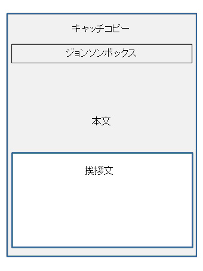

透明封筒と挨拶状の効果的な使い方
質問
透明封筒を使い２か月に一回ＤＭを出しています。
透明封筒を表から見ると挨拶状が表に来ます。
どうしても文字ばかりになり、反応率を上げる
ことができる内容になかなかなりません。
透明封筒の場合、中身が透けて見え、その内容が
反応率を上げるものでないといけないと思っています。
一枚目の挨拶状をなくすことは社内で反対が多く、
変更することができません。
何か良い案があれば教えてください。
回答
おっしゃる通りです。DMの一枚目に
挨拶状を入れるという考え方は間違っていません。
しかし、反応率のことを考えると挨拶状を
一枚目に入れたくなくなることも事実です。
そこで皆さんは、挨拶状の内容をいろいろ工夫
しながら反応率を上げる方法を駆使しています。
しかし見方を変えると以下のような方法があります。
A4サイズの透明封筒を使う場合、
入れる紙のサイズはＡ４になると思います。
その場合、挨拶状はＡ４サイズが普通です。
当然ですが、２枚目の紙が見えません。
そこで、このA4サイズの挨拶状をA5サイズ
（A4サイズの半分）にして封筒の下方に入れます。
結果、２枚目のA4サイズ紙の上部半分が見えるようになります。
２枚目の紙の上部の見える部分には、訴求効果のある
キャッチコピー、それに続く引き寄せ文を
続けて書いてください。
下記のような図に変更します。

挨拶状はA5サイズでないといけない決まりはありません。
A5サイズの挨拶状よりも小さい挨拶状にしても構いません。
また１枚目の挨拶状は白色の紙にし、２枚目の訴求する紙は、
クリーム色の薄いものや、レモン色なども効果的です。
ただし、濃い色の物はなるべく避けましょう。
文字が黒色ですので、沈んで見えにくくなります。
他のおすすめ記事
021_紙封筒と透明ビニール封筒 反応率が良いのは?
022_「ビニール封筒はやめて」と言われたら
080_DM開封率を上げる仕掛け
010_DMの開封率を上げる方法
005_A4サイズ紙でハガキを
前の記事
037_お客様の声の取り方
次の記事
039_カラー印刷で反応率アップ